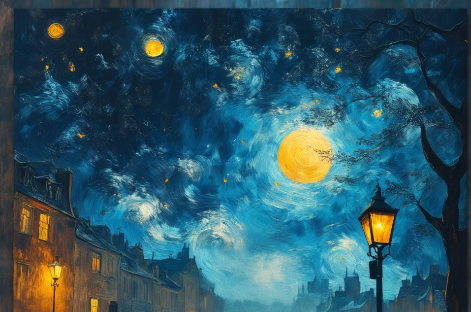

❝ কবিগুরু,
করো তুমি ভর
অধমেরে দাও বর
পারি যেনো নিবেদ্বিতে ছন্দ
না বাঁধিয়ে কল্পনায় দ্বন্দ্ব
যদিও বা দেখ ছন্দে পতন
গড়ে দিয়ো তোমার মতন
যদিও বা হারাই আমি!
কল্পনায়! বিলাপের সুর, তাল, লয়ে
ফিরে এসো তুমি অনিমেষ হয়ে! ❞
আখ্যা নেই নিরুপমা
শব্দ গুলো অগোছালো ভাসছে
দুঃসাহস কোরে কেউবা কাছে আসছে
বর্ণ গুলো হঠাৎ নেয় কল্পনার রূপ
তবুও কোথাও পাই নে তোমার স্বরূপ
উফ! ব্যক্ত করতে পারে না কোনো শব্দ
তোমার হাসি যে করেছে মোরে জব্দ
বর্ণ হারা, শব্দ ছাড়া আমি কিভাবে গড়ি প্রতিমা
নিরুপমা?
এলোমেলো শব্দ ঝড়ে হারিয়ে নিজেকে
খুঁজেছি শব্দ, নিবেদিতে তোমাকে
ব্যর্থ আমি, পাই নে যাহা চেয়েছিনু
তাও তুলে ধরলাম তুচ্ছ কতক শব্দ অনু
হাসি? কৃত্রিম নয়! প্রাণবন্ত
যাতে হারিয়ে যেতে নেই সময়ের অন্ত!
যেথায় মিশে যায় হৃদয় দিগন্ত
নিমেষেই হয় সব নির্বিকার
অপলক দৃষ্টি হয় অসার
কর্ণ যুগল পায় বিরতি
তবে চেতনা পায় জ্যোতি
কাল দীর্ঘায়ন? জানি নে, তবে
কাল অচলায়ন ঘটে
দেখি স্নিগ্ধ হাসি যবে
মনে মনে চলে বিলাপ রচনা,
"সু (সুহাসিনী),
একটু হেসো মৃদু হাসি
যা ফোঁটায় ফুল রাশি রাশি
কোথায়? কল্পনায়...
কোরে কারণ আমায়!"
হঠাৎ কেটে যায় ভ্রম
ফেরে আত্মমনন!
তবু ভেবে ভেবে মন আনমনা
চলতে থাকে বিলাপ রচনা
বিরোচনাও ঘটে তবে আড়ালে
হয়তোবা কখনও বিষাদ সিন্ধু নামে
অন্তরালে...
নেত্র? যে হেরেছে মোরে!
ফ্রেম, বন্দী রাখে তার তরে
যদিও মেলে দর্শন
করিতে ভুলি নে বিরোচন
কাছে থেকে দেখিনি
তবুও তর্জমায় হিসেব করিনি (দুঃসাহস নেই তাই)
চাই নে সেটাকে করতে সীমিত
করতে উপমিত!
থাক না নেত্র-দ্বয় অদ্বিতীয়
স্বীয় ভঙ্গিমায় প্রিয়
কন্ঠ? তা শুনি নি ভালোভাবে
যদিও সুযোগ হয়েছিল কয়েকবার
তাতে ছিল না স্বীয় অধিকার!
কোলাহলও ছিল না অভাবে
হারিয়ে ফেলেছি তা ভিড়েতে সবার!
ভয়ে-অভয়ে হয়নি শ্রবণ সেভাবে
তবুও একটা সুর ভেসে আসে দূর হতে
আবছা থেকে উৎপত্তি যেনো তার
তব প্রগাঢ়তায় সমাপ্তি!
কি, বলবো? রবি ঠাকুরের সোনার তরীর ভাষ্যে
তা এমন "...পরপারে দেখি আঁকা তরুছায়া..."
কিন্তু গোমরামুখো আর একটা শব্দ এলেবেলে
আসে চলে! ঠিক যেনো স্পিড ব্রেকার!
কি? তা পরে বলছি, যেনে রাখা ভালো
সেও পেয়েছে জায়গা তার সমীপে!
কে? ঐতো স্পিড ব্রেকার!
এইবার আসি প্রতিকৃতিতে!
উফ! কী কঠিন শব্দ তাই না? ঠিক তাই!
দুঃসাহস এর কথা বলা উচিত প্রথমে!
চেষ্টায় নেই কোনো কমতি
পেন্সিল, শার্পনার প্রস্তুত। বলছে, "করো জলদি"
যদিও বা রেখা টানি
কল্পনারা দেয় হাত-ছানি
ছবিটায় আবার হারাই, কখনও ভয় পেয়ে লুকাই
যদি কেউ দেখে কি জবাব দেব?
আদৌ কি তাকে আমি পাবো? (দীর্ঘশ্বাস)
যাহোক, ভয়ে ভয়! চেষ্টার কমতি নেই
নিশি বহমান, ছবি অস্পষ্ট, দৃষ্টি অপলক
তবুও কেনো ইরেজার এতো উদ্বিগ্ন
বার বার করছে আমাকে মগ্ন
না! পারি নে আর! সেই দীপ্তি নেই কোথাও নেই
যা প্রতীয়মান ছবিটায়
পায়চারি করে খুঁজি উপায়
কিভাবে রূপ দেই সেই নেত্র, সেই হাসি, সেই দীপ্তি!
নিশীথিনী ক্রমশ হয় নিশ্চুপ,
শান্ত চারিদিক, মন তব অশান্ত,
এই আক্ষেপ তীব্র,
পেন্সিলের কারুকার্য ব্যর্থ!
কেনো সে আজ উগ্র?
ইহা প্রথম নয়! তবুও আজকে কেমন অস্বস্তি
"মনোযোগ নেই?" না, বেশ আছে!
নইলে এতো সূক্ষ্ম ভুল ধরা পড়ল কিভাবে?
প্রতীয়মান যা দীপ্তির অভাবে!
দীর্ঘশ্বাস!
শেষমেষ জিতে যায় ইরেজার
যাকে রাখিই নি কাছে,
একরাশ ক্ষোভ, আর বাকা হাসি হেসে
কহিল টেবিল কোন হতে,
"ব্যর্থ তুমি ব্যর্থ! আজ সফল আমি"
কি করিব কথা ভুল নহে
মনে যদিও বা সহে, চোখে না সহে!
দূরে ছুড়ে ফেলতে নিয়ে থেমে যাই
আমিই তো দিয়েছি তাকে ঠাঁই!
টেবিল কোণে বিষাদ দিনে
পেন্সিলেরা নির্বাক, শার্পনার নতদৃষ্ট,
হয়ত বলতে নিয়ে বলে না, "ফের না হয় আকো!"
"খসড়া কাগজ, ক্লিপ বোর্ডদের ফের না হয় ডাকো!"
বুঝলাম তাদের এই আবদার খানা এখনো আছে
তবে ওই যে ভয় হয় পাছে
কেনো? দুঃসাহস নেই আর!
এভাবে দেয় সে হারিয়ে আমাকে
যে পারে নি তোমার দীপ্তি দিতে তোমাকে
কে? ঐতো ইরেজার!
অবশেষে উত্তরে আমি হেসে,
"ওগো ভুলের দেবতা
আজকে হেরেও আমি হারিনি!
তুমি হয়তো জিতেছো মানলাম
সেই জন্য নতুন চরণ আনলাম!
তার দীপ্তি রূপায়ণ করা আমার সাধ্য নহে
ইহা মোর সৌভাগ্য, সেই ব্যর্থতাকেই নাম দিলাম কবিতা"
এই দুঃসাহস আর করি নে আমি
চেয়ে চেয়ে দেখি সেই দীপ্তি
যা দেয় অপূর্ণতায় প্রাপ্তি
দৃষ্টি অপলক ক্রমশ ক্ষীয়মান
আক্ষেপ জমে সিন্ধু সমান
ক্ষমা চেয়ে নেয় পেন্সিলেরা, আমি তার প্রমাণ
যদিও ছবি স্পষ্ট নহে
তবুও কেনো যে দীপ্তি মেলে দর্শনে
জানি নে!
যদি জানো তবে বলবে কি?
চরণ বলে, "আবার বিলাপ? এ আমরা মানি নে!"
ঠিক আছে বিলাপ ছাড়ি
করলাম বিলাপের সাথে আড়ি।
এইগুলা নিছক ফ্লার্ট ভেবে করিও না ভুল
ইহা মোর বন্দনা!
ফ্লার্ট পারি না বিধায় আজ স্বভাব কবি!
বিশ শতকের আমি ঠুনকো জ্ঞানে
লিখছি যাহা মনে প্রাণে
জানিনে ,
চরণগুলো পূর্বে কেউ লিখেছে কিনা
সাহিত্য-জ্ঞান আমার শুন্যপ্রায়
আমি নইকো কবি, এ শুধু তার রূপ বন্দনার অভিপ্রায়
কেনো? থাক না কারণ টা আমার কাছে
যদি চাও শুনে নিয়ো জিজ্ঞাসায় পাছে
যদিও বা মিলে যায়, ক্ষমা করে দিয়ো
বিদ্রুপ ঠেলে নিজের করে নিয়ো
যদিও বা ভুল করি বন্দনায়
ক্ষমা দিয়ো রবি ঠাকুর তব প্রার্থনায়
শব্দ আছে এখনো অনেক
তাহলে কেনো চরণ বাধঁছে না?
উপলব্ধি কি শেষ হলো?
উপলব্ধি এখনো অনেক করা বাকি
আপাতত অনধিকার ওগুলো
দূর হতে যতটুকু পাই
তাই পেয়েছে চরণে ঠাঁই
উপলব্ধি বোধ করি এই
আরো হতে পারতো,
সেই নিমেষ মাত্রই বা কই পেলাম?
তাই আমি অনিমেষ আজ!
কাল স্রোত ছাড় দিলেও পারত
ভাগ্য দেবতার কোনো এজেন্ট আমার ছিলনা
তাই হয়তো কিছু চরণ ঠাঁই পেলনা
যদি এজেন্ট থাকতো?
তাহলে হয়তো থাকতো স্মৃতি
যারা পেতে চরণেতে স্থিতি
ভেবে ভেবে হলাম শূন্য,
আখ্যা দিতে পেলুম নে চরণ গুলোকে
হলো না সেগুলো অনন্য
যদি চাও, দিয়ো তাহা মোর সমীপে আখ্যা ।
যদি তুমি চাও তবে আবার লিখবো,
অসীম হবে চরণ তব বন্দনায়
শর্ত আছে বটে, যদি থাকো মোর পাশে বসে
কোথায়? যেথায় চন্দ্রিমা কাছে এসে মৃদু হেসে বলবে ,"আচ্ছা!"
হয়ত আমি ব্যর্থ বন্দনায়
তবে চরণ গুলোকে দিয়ো ঠাঁই
গুরুচণ্ডালি দোষ? গুণ ধরো।
দোষ আমার, বিচার আমারই কোরো!
লিখেছেন ছন্দে ছদ্ম
অনিমেষ দত্ত!
(সীমিত আর লিখি নি অনধিকার তাই)
বাজে আবদার
শুনেছি গান করো তব
শুনেও শুনি নি এ কেমন শোনা!
"কোথায় শুনেছ?"
হাজার ভিড়ে নেত্র দ্বয় যেমনি ব্যস্ত
খুঁজে নিতে তোমায়
ঠিক তেমনি ! কর্ণ-দ্বয় দেয় সাড়া অগোচরে,
তোমার নামেতে, জানায় খবর আমায়!
তথ্য গুলো ছন্নছাড়া
কিভাবে যেনো তারা গুছিয়ে নেয়
হঠাৎ মনে করিয়ে দেয়
ভাবনায়, পদে পদে!
যেমনি বুদ্ধি-বাতি জ্বলে বিপদে!
যেন তুমিই বলেছ মোরে
কানেকানে চুপি-সাড়ে
কিন্তু জানো? কারো ভালো কেউ সয় না!
বিজ্ঞান ফেলে দেয় তা দেজা-ভুর তরে!
তুমিই বলো এটা ঠিক?
চরণ বলে, "বিলাপ করলে আমরা যাবো চলে!"
সে কি! তাহলে কিভাবে আসবে ভাবনা
যা রয়েছে অন্তরালে?
"ঠিক আছে বিলাপ ছাড়ি আবদার তব কর
তাকে বিরক্ত না কর
যদি করো তাহলে এখন আবদার নিয়ে সরো"
উফ! আর পারি নে তোমাদের এই ধরা বাধা ছন্দে
পড়তে হয় শুধু বিলাপের সাথে দ্বন্দ্বে!
কোথায় প্রথম কিভাবে জানি না,
আমাকে তারা জানায় নি
তবে বুঝতে আমি পেরেছি
অভিনয় থেকে সরি নি!
বুঝতে তাদের দেই নি
কাদের? ষষ্ঠ ইন্দ্রিয়!
এতে ভুলত্রুটি আমি করিনি
তবে জানো তুমি?
আমি না জানালেও
তাঁরা চুপ থাকে নি!
কে? ষষ্ঠ ইন্দ্রিয়!
আকারে ইঙ্গিতে করেছে তাহা প্রতীয়মান
কি? এই যে আমি খারাপ অভিনেতা
বুঝতে রইলো না বাকি
কর্ণদ্বয় নয় কো খারাপ শ্রোতা!
পরিস্থিতি তবুও দিয়েছে ফাঁকি
দেয় নি সুযোগ তাদের শ্রবণে
শুনেছি যাহা স্বমনে!
জানি নে কো শোনা হবে কি না!
না আমি কবি, না শ্রেষ্ঠ কবিতায়
শুধু চেয়েছি তব চরণে ঠাঁই
কখনো যদি তাদের সৌভাগ্য হয়
তবে তুমি চুপ থেকো নে কো!
এর তাদের অনুনয়
গেঁয়ো ওই গানটা দিয়ে পরিচয়
কোনটা? ঐতো ঐটা!
রবি ঠাকুর ছাড়া কিছু ভালো লাগে আর!
কেনো? জানি নে মনের আবদার!
আগে শুনতেম না বুড়োলোকেদের গান ভেবে!
কে জানত এভাবে তারা প্রতিশোধ নেবে!
চরণ,
" ছেড়ে দে হেঁয়ালি নইলে হবে না মিতালী
বার বার মনে আসে তোর বিলাপ?
ওনার নেই সময় করিস না বেশি আলাপ!
তাঁরাতারি ঝেড়ে কাশো
বলো কোন গানটি ভালোবাসো!"
আর পারি নে বাপু!
এতো কথা জমে আছে
চরণের অজুহাতে তারা মুক্তি পেলো পাছে!
নইলে দমবন্ধ হয়ে মারা যেত
তব কোথাও কি ঠাঁই পেতো?
কোরো নে রাগ, করে দিয়ো মাপ
যদিও বা বেশি বকে ফেলি বিলাপ!
তোমার কথা মনে পড়লে
অনেক গানই করে আবদার
যেনো সবাই প্রতিফলন ভাবনার
তবে একটা গান ভিন্ন!
ধাক্কা দেয় মনে!
হয়তো রবিঠাকুর নিজেও মানতেন না
কি? মোর মুখবন্ধ!
কি সেটা? এই যে
অর্ধেক তার রইয়াছে ছন্দ বাকি অর্ধেক দ্বন্দ্ব!
কার? গানটার!
চরণ,"হয়েছে বাপ এই বার চাই মাপ,
অজুহাতে আমাদের নামে শুধু বিলাপ?"
(দীর্ঘশ্বাস)
বলছি তবে,
"দূর হতে আমি তারে সাধিবো
নয়নে বিরহ ডোরে বাধিবো
বাঁধন বিহীনি সে বাঁধন
অকারণ..."
চরণ গুলো কেনো এত অবাধ্য?
জানো তুমি?
অনিমেষ ছাড়া নেই করো সাধ্য!
থামানোর!
কীবোর্ড এর প্রতি ক্লিকে উঠে আসছে বর্ণ
যদিও বা অটো করেক্ট বেশ ব্যস্ত
নেই নিমেষ! ঠিক করে যাচ্ছে শব্দ
কারণ আমি কবি নই!
গুরুচণ্ডালি যেনো মোর গুণ!
একরাশ কৃতজ্ঞতা রবিঠাকুরকে
হয়তো দিয়েছেন অধমেরে বর!
নইলে কিভাবে এত চরণ আসছে?
যেনো আবেগের ঝড়!
আমি জানি নে কিভাবে!
ক্লান্ত, হাফ ছাড়ি, বিশ্রামের অভাব!
মনের বিশ্রাম!
তর্জনী অনিমেষ প্রায়!
সহোদর হাত গ্রাভিটির টানে অসার
তবুও কেনো নেই অবসর
যেমন পশু পাখি থাকে বনে
তেমনি এতো ভাবনা ছিল মনে।
সন্তর্পনে!
সাদা কালো ক্যানভাসে রঙিন ভাবনা?
ভাববে হয়তো,"এ হয়তো ওর জল্পনা কল্পনা
দিলেম উড়িয়ে বন্দনার চরণ"
রবি ঠাকুর!
কেনো খণ্ড কিছু স্মৃতি নিয়ে
এতো এতো চরণ দিয়ে
করছো মোরে বর,
যদি সব হয় ব্যর্থ?
অনিমেষ নিমেষ পাবে তো ?
"কিসের!" হাফ ছাড়বার!
"সে আমি জানি নে"
যদি ও করে সব তুচ্ছ?
যদি আগে থেকেই কেউ পেয়ে থাকে আখ্যা!
তব?
"তবে কি!"
ভাসিয়ে দিয়ো চরণ গুলি গঙ্গায়
"অনিমেষ নিখোঁজ" এই লিখো শেষ সংজ্ঞায়!
কেনো অনিমেষ?
অনধিকার তাই কাছে ন যাই!
না তব প্রস্থানের অনুমতি
অসীমতট্ যেনো না হয় মোর পরিণতি!
শুনছো তুমি? এ অনিমেষ এর নিবেদন!
চরণ গুলির করুন আবেদন।
আবার বিলাপ আসছে তেড়ে!
চরণ চাইছে আখ্যা, মাথা নেড়ে
পারি নি দিতে আখ্যা!
তাই হয়তো লেখনী পেয়েছে অনিমেষ দত্ত
এ কেমন মিথ্যে? যেনো প্রতীয়মান সত্য!
কবিতা বলবে এ অনিমেষ নয়!
তবে কে? আর কে আছে এমন মত্ত?
করছে এমন ভয়?
পরিচয় দেবে চরণ, এ তাদের অনুনয়
তাহলে অনিমেষ নাম কেনো?
আমি যে আখ্যাহীন তুমি ছাড়া!
তাই চরণ গুলো এমন বাঁধনহারা
আড়ালে লুকিয়ে রেখে আমাকে
অনিমেষকে দেয় চরণে তোমাকে
আছো তুমি রুপকে নিরুপমা বেশে
তাই আমি তব অনিমেশে
এভাবে আমি-হীন লেখনী পেলো অনিমেষ দত্ত!
যদি অভয় দাও,
দাও যদি মোর চরণ গুলোকে ঠাঁই,
তবে অনিমেষকে দেবো মুক্তি
চরণ হারাবে অনিমেষের মিথ্যে যুক্তি
তবেই,
নির্দ্বিধায় আসবে কবি সমীপে
তার চরণ নিবেদনে তোমাকে, সু!
এত বড় প্রেম পত্র হয়তো কেউ দেয় নি! বানান ভুল মার্জনা কোরো কেমন?
স্বত্ব অনিমেষ দত্ত © ২০২৪ উৎসর্গ নিরুপমাকে! 